Below you will see examples of a few different audible sound waves. In each panel one wave completes a full period, other waves are shown in contrast that may be faster or slower.
Subsection1.1.1Pure and composite waves
In all panels below, the thick sky blue colored curve represents the wave \(\sin(2\pi x)\text{,}\) a wave with a period of one unit. Notice that this wave is barely distinguishable from zero on the scales relevant to the periods of other waves shown.
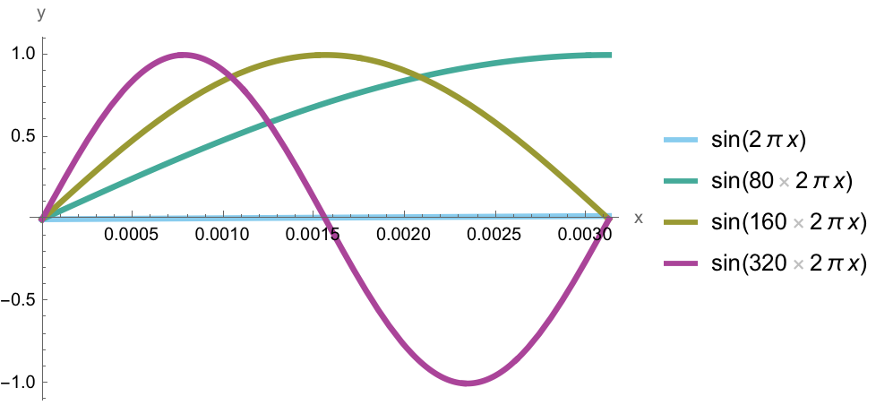
Figure1.1.1.Graph of a 'high' frequency sine wave. The purple wave completes one full period in \(\frac{1}{320}\text{th}\) of a second. If your browser does not offer an inline player to play the sound, download a high frequency sound file here 2 .
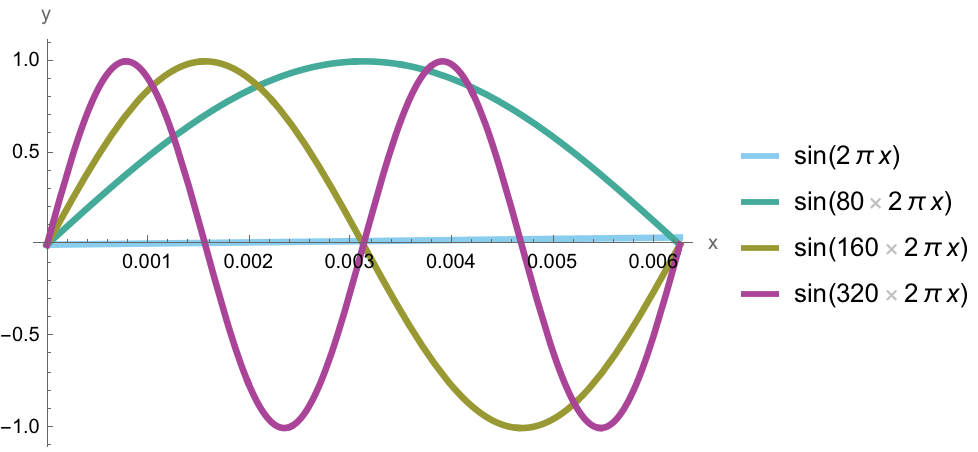
Figure1.1.2.Graph of a 'medium' frequency sine wave. The olive drab wave completes one full period in \(\frac{1}{160}\text{th}\) of a second. If your browser does not offer an inline player to play the sound, download a medium frequency sound file here 3 .
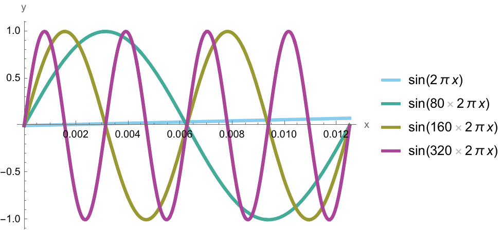
Figure1.1.3.Graph of a 'low' frequency sine wave. The turquoise wave completes one full period in \(\frac{1}{80}\text{th}\) of a second. If your browser does not offer an inline player to play the sound, download a low frequency sound file here 4 .
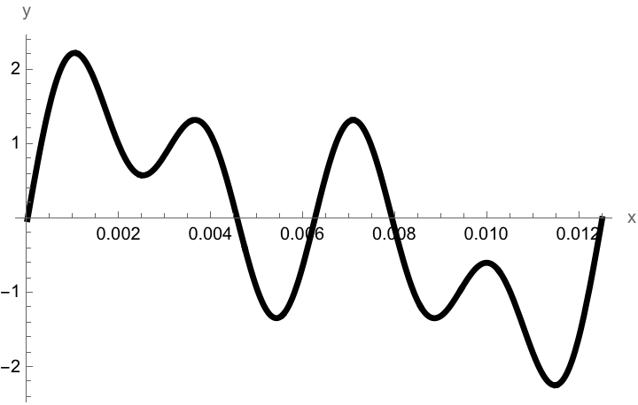
Figure1.1.4.Graph of a composite frequency sine wave. Equally-weighted components with frequencies of \(\frac{1}{80}, \frac{1}{160},~\text{and}~\frac{1}{320}\text{th}\) of a second. If your browser does not offer an inline player to play the sound, download a composite frequency sound file here 5 .
Subsection1.1.2Spectrograms of pure and composite waves
In all panels below, the thick sky blue colored curve represents the wave \(\sin(2\pi x)\text{,}\) a wave with a period of one unit. Notice that this wave is barely distinguishable from zero on the scales relevant to the periods of other waves shown.
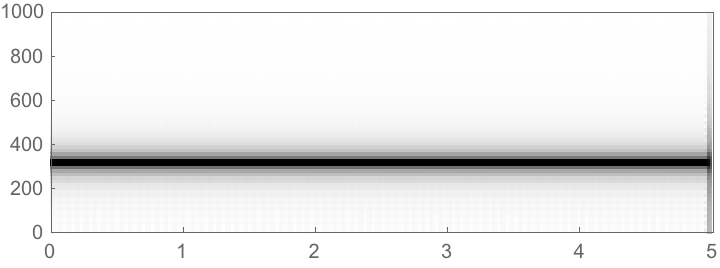
Figure1.1.5.Graph of a 'high' frequency sine wave. The purple wave completes one full period in \(\frac{1}{320}\text{th}\) of a second. The dominant band in the spectrogram reflects the frequency of a sound corresponding to the purple wave.
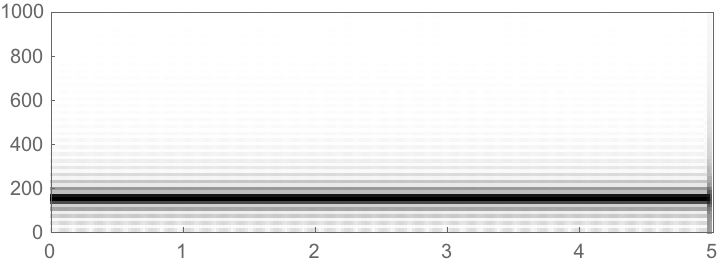
Figure1.1.6.Graph of a 'medium' frequency sine wave. The olive wave completes one full period in \(\frac{1}{160}\text{th}\) of a second. The dominant band in the spectrogram reflects the frequency of a sound corresponding to the olive drab wave.
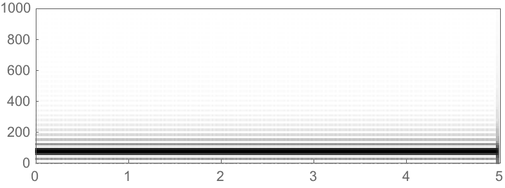
Figure1.1.7.Graph of a 'low' frequency sine wave. The turquoise wave completes one full period in \(\frac{1}{80}\text{th}\) of a second. The dominant band in the spectrogram reflects the frequency of a sound corresponding to the turquoise wave.
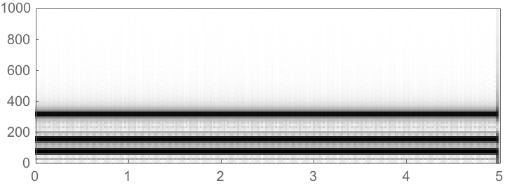
Figure1.1.8.Graph of a composite frequency sine wave. The black wave completes one full period in \(\frac{1}{80}\text{th}\) of a second, matching the slowest of all components. The bands in the spectrogram reflects three underlying frequencies present in the warbled sound.
Subsection1.1.3Bird "Shazaam"
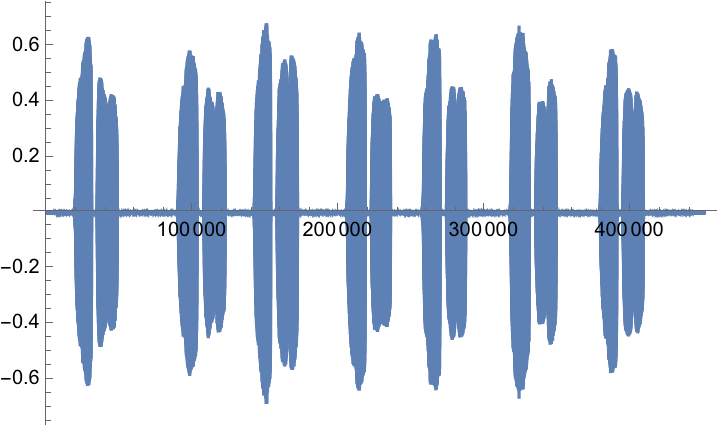
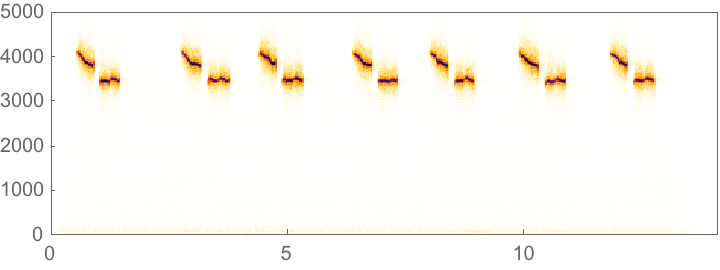
Figure1.1.9.The waveform and spectrogram of a chickadee call.
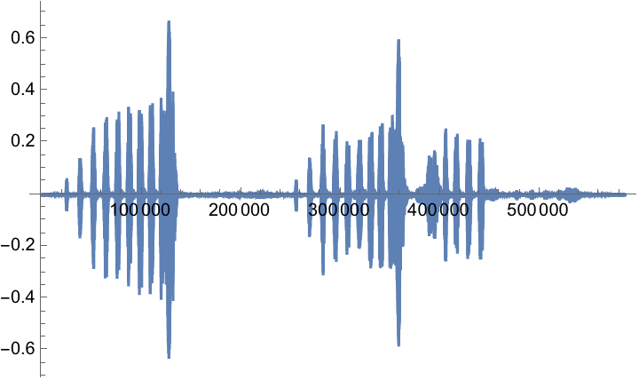
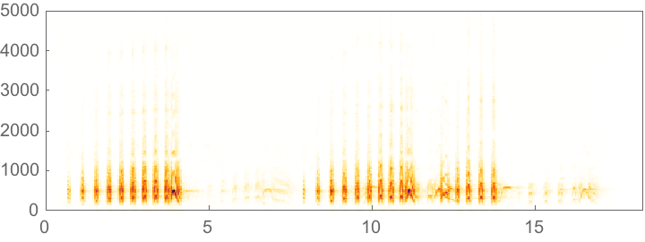
Figure1.1.10.The waveform and spectrogram of a barred owl hoot.
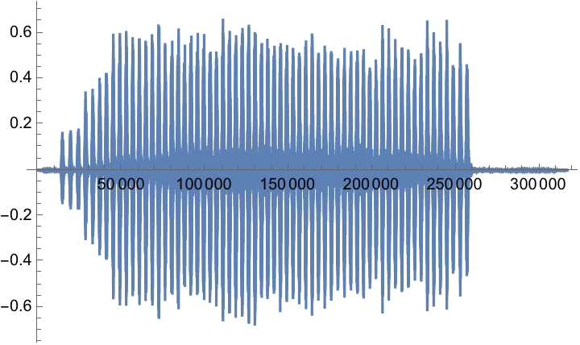
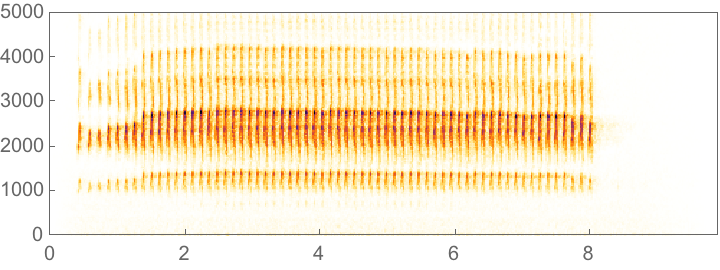
Figure1.1.11.The waveform and spectrogram of a norther flicker sound.
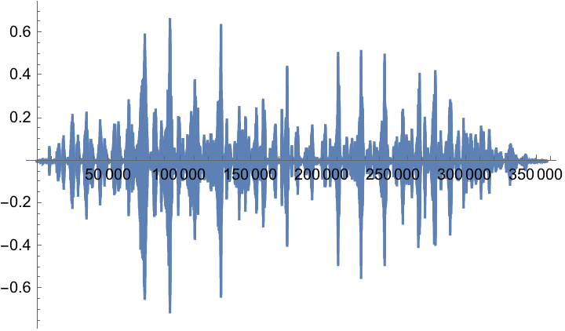
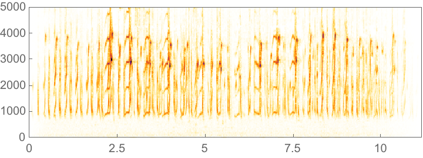
Figure1.1.12.The waveform and spectrogram of a norther flicker sound.